Inferring Fine-grained Control Flow Inside SGX Enclaves with Branch Shadowing
USENIX Security ’17
Trusted Execution Environment
- Trusted Execution Environment (TEE) is an important security requirement, especially in running security-sensitive applications on public cloud
- Fully-trusted operator => problematic
- Fully homomorphic encryption => slow
- property-preserving encryption => weak
- Hardware-based techniques are actively proposing:
- Trusted Platform Module
- ARM TrustZone
- Intel Software Guard Extention (SGX)
Side-channel attack on Intel SGX
Intel SGX attracts significant attention due to its availability and applicability:
- Processes running inside an enclave can use almost every unprivileged CPU instructions without restrictions
- Monitor page-fault or page-access sequence:
- SGX allows an OS to fully control the page table of an enclave process
- Malicious OS knows exactly which pages an attacked enclave attempts to access by monitoring page faults.
- No measurement noise
- Noise-free, but coarse-grained
- Measure cache hit/miss timing
- Fine-grained, but noisy
Limitations of controlled-channel attack
- Coarse-grained page-level access patterns
- Recently proposed countermeasures against the attack prevent only the page-level attack. Therefore, a fine-grained side-channel attack (if exists) would easily bypass them.
Intel SGX

- allow only enclave code to access memory of the same enclave
- an on-chip memory-encryption engine encrypting/decrypting data before writing to/reading from physical memory
Enclave context switch
EENTERandEEXIT- Asynchronous enclave exit
AEXdue to exceptions and interrupts ERESUMEto resume the execution fromAEXinterrupt- During a context switch, SGX conducts a series of checks and actions to ensure security.
- However, SGX doesn’t clear the branch history (branch target buffer)
Branch prediction and branch target prediction
- Branch prediction is a procedure to predict the next instruction of a conditional branch by guessing whether it will be taken.
- Branch target prediction is a procedure to predict and fetch the target instruction of a branch before executing it.
- Modern processors have the BTB to store computed target addresses of taken branch instructions and fetch them when the branch is predicted as taken.
- Branch history is also recorded (taken or not taken, as well as targte address) in BTB.
- BTB has limited capacity.
Last Branch Record
The LBR is a feature of Intel CPUs that logs information about recently taken branches, including branch instruction, target address, whether mispredicted and elapsed core cycles between LBR entry updates.
- An attacker may be able to know fine-grained control flows of a victim process by using LBR.
- However, an enclave doesn’t report its branch executions to LBR unless in debug mode.
- LBR also has limited capacity
Branch-prediction side-channel attack
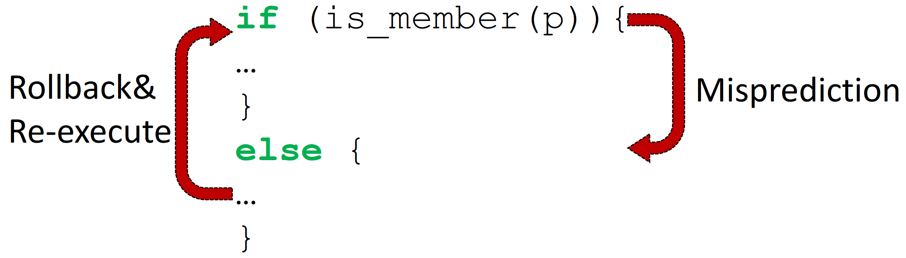
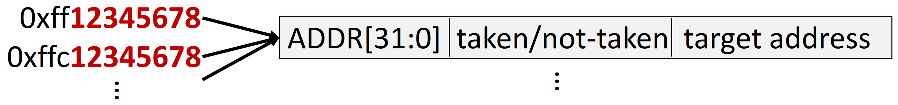
The branch-prediction side-channel attack aims to recognize whether the history of a target branch instruction is stored in BTB.
- BTB only uses lowest ADDR[31:0] as index.
- The attacker can determine whether the probed branch instruction has been taken by:
- Constructing a shadow branch instruction with colliding address
- Executing the shadow branch instruction
- Measure the execution time
Challenges of branch-prediction side-channel attack
- The addresses of branch instructions cannot be easily guessed.
- BTB entries can be easily overwritten before an attacker probes them due to limited capacity.
- Timing measurement of branch misprediction suffers from noises.
- Colliding branches affect each other’s prediction
Challenges of branch-prediction side-channel attack
- The addresses of branch instructions cannot be easily guessed.
- BTB entries can be easily overwritten before an attacker probes them due to limited capacity.
- Timing measurement of branch misprediction suffers from noises.
- Colliding branches affect each other’s prediction
- High variance
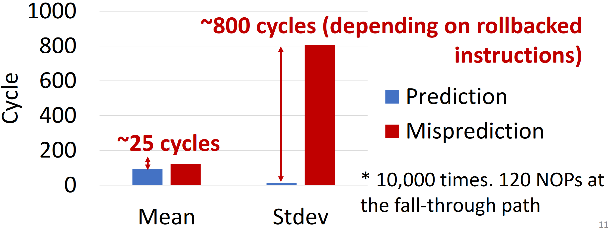
Challenges of branch-prediction side-channel attack
- The addresses of target branch instructions cannot be easily guessed.
- BTB entries can be easily overwritten before an attacker probes them due to limited capacity.
- Timing measurement of branch misprediction suffers from noises.
- Colliding branches affect each other’s prediction
- High variance
- Difficult to synchronize target and shadow branches
Branch Shadowing Attack
- Apply LBR to a shadow branch to identify branch prediction results instead of timing
- Realize near single-stepping by increasing timer interrupt frequency and disabling the cache
Threat Model
- The attacker knows the source code or binary of a target enclave
- The attacker interrupts the execution of the target enclave as frequently as possible to run the branch shadow code.
- via a local APIC and/or disabling CPU cache
- The attacker recognizes the shadow code’s branch predictions/mispredictions by monitoring LBR’s performance counters
- The attacker prevents or disrupts the target enclave from accessing a trusted time source.
- avoid the detection of attacks because of slowdown.
Overview
Step 1: Prepare a shadow copy of an SGX program to monitor it with LBR
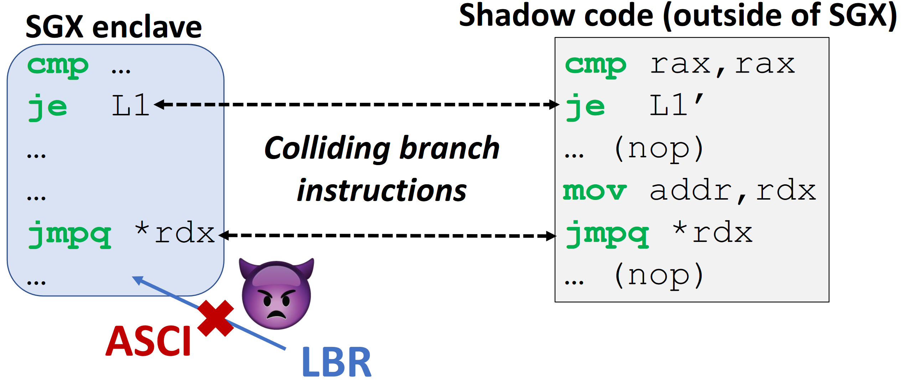
Step 1: Prepare a shadow copy of an SGX program to monitor it with LBR
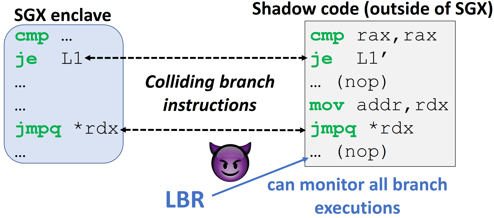
Step 2: Interrupt SGX execution and monitor shadow code with LBR
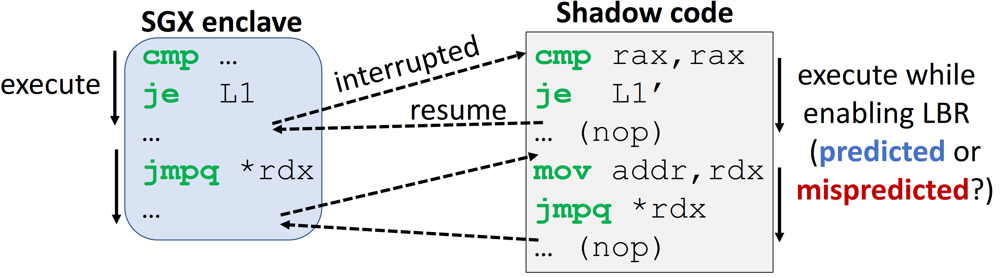
For a conditional branch, LBR reports condition prediction result (taken or not taken).
Whether or not shadow branches were correctly predicted reveals the history of target branches.
Step 2: Interrupt SGX execution and monitor shadow code with LBR
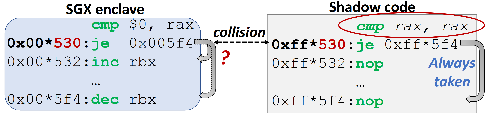
- Because LBR does not report not-taken branches, the shadow branch should be always taken.
- If the target (probed) branch has been taken, the LBR reports: the shadow branch has been correctly predicted.
- If the target (probed) branch has been not taken, the LBR reports: the shadow branch has been mispredicted.
Step 2: Interrupt SGX execution and monitor shadow code with LBR
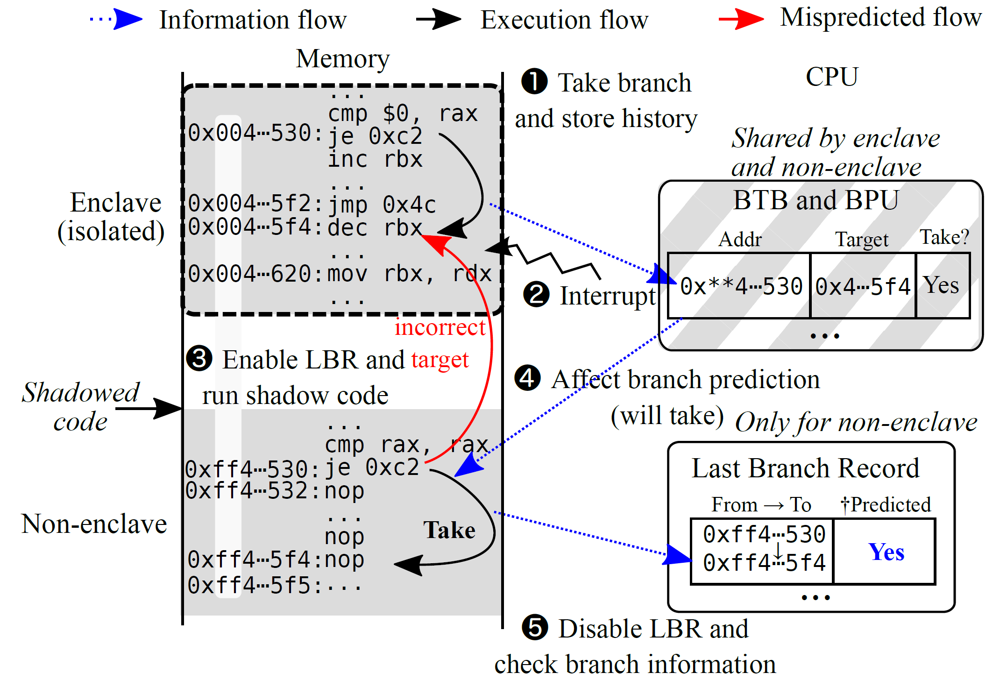
- Because LBR does not report not-taken branches, the shadow branch should be always taken.
- If the target (probed) branch has been taken, the LBR reports: the shadow branch has been correctly predicted.
- If the target (probed) branch has been not taken, the LBR reports: the shadow branch has been mispredicted.
How to shadow indirect (unconditional) branch?
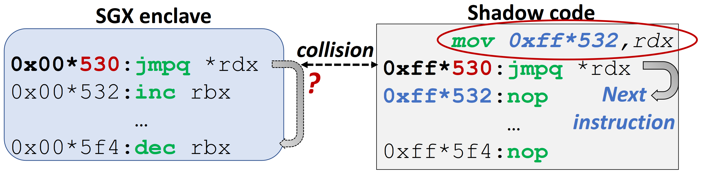
For an indirect branch, LBR reports a target prediction result (whether the jump address is correctly predicted).
- Use next instruction as the jump address of shadow indirect branch => Because real application won’t jump to next instruction
- If the target (probed) branch has been executed, the LBR reports: the shadow branch has been mispredicted.
- If the target (probed) branch has been not executed, the LBR reports: the shadow branch has been correctly predicted.
Near single-stepping: Frequent timer and disabled cache
- Increase APIC timer interrupt frequency
- about 50
ADDinstructions between two interrupts (~50 cycles) - Not enough for short loops
- about 50
- Disable CPU cache
- about 5
ADDinstructions between two interrupts (~5 cycles)
- about 5
Evaluation
Attack RSA Exponentiation
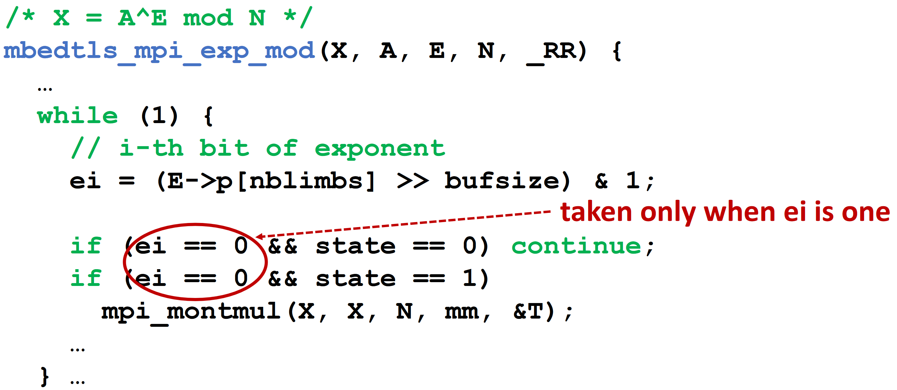
- RSA-1024 decryption with two executions of
mbedtls_mpi_exp_modwith two different 512-bit CRT exponents in each iteration. - On average, the branch shadowing attack recovered approximately 66% of the bits of each of the two CRT exponents from a single run of the victim.
- about 10 runs are enough for fully recovery
Countermeasure: Flushing branch state at SGX context switch
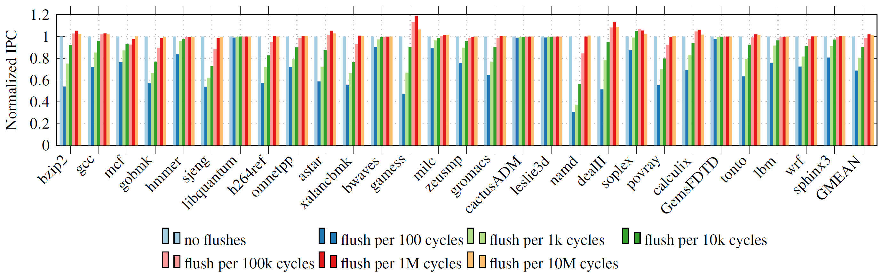
- Most effective, but need hardware modification
- Overhead depends on the flush frequency
- ~2% overhead when flush at every 100k cycles.
Countermeasure: Flushing branch state at SGX context switch
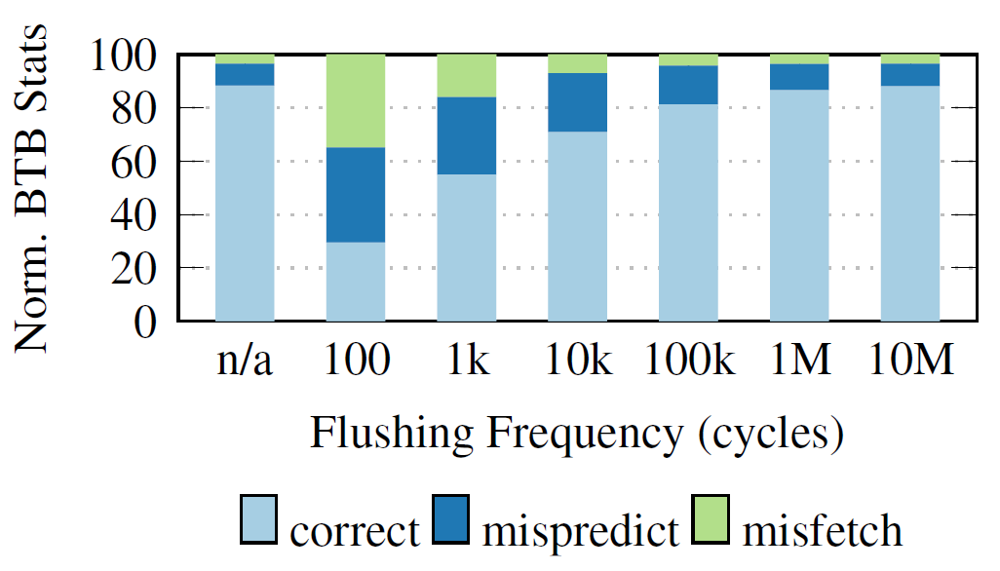
- Most effective, but need hardware modification
- Overhead depends on the flush frequency
- ~2% overhead when flush at every 100k cycles.
- The BTB and BPU statistics are also barely distinguishable beyond a flush frequency of 100k cycles.